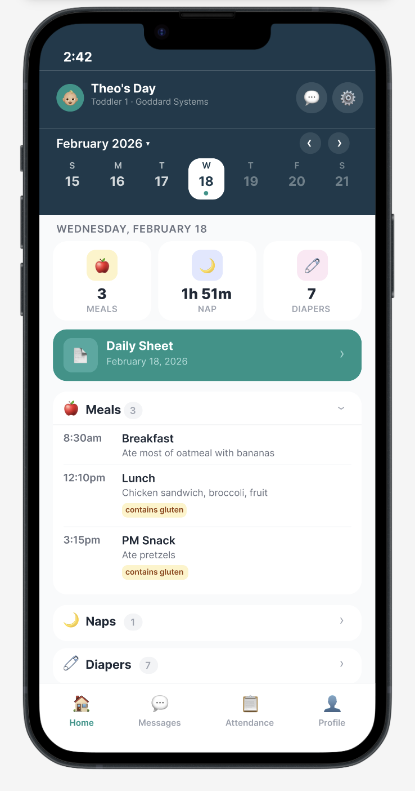
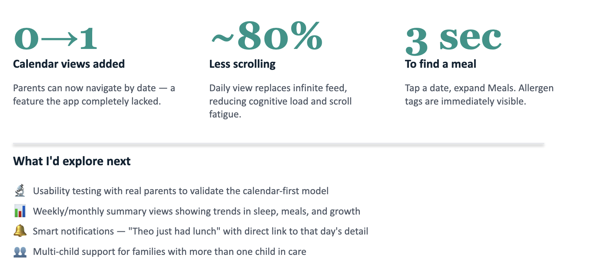

Stop scrolling. Start finding.
A concept redesign of Family Hub, the daycare communication app used by parents at Goddard Schools, that replaces an infinite-scroll feed with calendar-first navigation.
Parents can't find what they need.
Family Hub tracks meals, naps, diapers, photos, and messages from every daycare day. All of it gets dumped into a single infinite-scroll feed with no way to navigate by date. A parent who wants to check what their toddler ate last Tuesday has to scroll through days of entries to find a single meal log.
The app has the data. It just doesn't have a navigation model.
Three pain points the feed creates
- Endless scrolling. Every activity (meals, naps, photos, messages) lives in one stream. Finding past entries means scrolling through days of content.
- No date navigation. There's no calendar, no date picker. You can't jump to a specific day.
- Meals lost in noise. Meal details and allergen info are mixed in with photos and school newsletters, so the things parents check most urgently are the hardest to find.
The right primitive isn't a feed. It's a calendar, with the feed nested inside each day. Same content, different shape.
Calendar-first navigation.
Replace the infinite feed with a date-organized daily view. A calendar strip lets parents tap any day to instantly see that day's activities, grouped by category: meals, naps, diapers, and photos.
- Browse by day. Week strip plus full calendar. Tap any date to see that day's report.
- Glanceable stats. Quick-view cards show meal count, nap duration, and diaper count at a glance.
- Grouped sections. Collapsible categories so parents find what they need without scrolling.

Designed around daily routines.
Calendar navigation
A week strip with teal dots indicating days with data. Tap the month label to open a full calendar for jumping to any date. No more scrolling to find last Tuesday.
At-a-glance stats
Three quick-view cards at the top of each day: meal count, nap duration, and diaper changes. Parents get the summary before diving into details.
Organized meal tracking
Every meal logged with time, description, and allergen tags (like "contains gluten") clearly highlighted. Grouped under a collapsible Meals section, tap to expand.
Photos by day
Photos are grouped by the day they were taken, not lost in a stream. Each day's photos appear in a dedicated section with captions.
Design principles
The principles that guided every decision across the redesign, from layout choices to copy.

A side-by-side comparison.
On the left, the existing app. An endless scroll mixing every event type. "Just walking by!" sits next to "PM Snack 3:15pm" next to a Daily Sheet PDF, with no way to scope down.
On the right, the redesign. A single screen titled Theo's Day, with quick stats up top and clean, expandable sections below. Same content, completely different mental model.
architecture
From chaos to clarity.
The IA shift is the heart of the redesign. Same data, restructured for how parents actually use it.
Before
- Infinite feed (all types mixed): photos, naps, meals, diapers, daily sheets, newsletters. No filtering, no date navigation.
- Threaded list: attendance, send notes.
- Settings: profile and notifications.
After
- Calendar + daily view: week strip (tap any day), full calendar (tap month), quick stats row, then collapsible sections for meals, naps, diapers, photos, plus the Daily Sheet link.
- Threaded list: same (attendance, notes preserved).
- Settings & toggles: unchanged.
Don't move the screens that already work. Restructure only the surface that's broken (the feed) and leave the rest alone.

redesign achieves
Three measurable wins.
- Calendar views added. Parents can now navigate by date, a feature the existing app completely lacked.
- Less scrolling. A daily view replaces the infinite feed, reducing cognitive load and scroll fatigue.
- To find a meal: tap a date, expand Meals. Allergen tags are immediately visible. The thing parents check most often is now the easiest thing to find.

explore next
Where this goes after the concept.
- Usability testing with real parents to validate the calendar-first model against the existing feed pattern they're already used to.
- Weekly and monthly summary views showing trends in sleep, meals, and growth, so parents see patterns, not just isolated days.
- Smart notifications like "Theo just had lunch" with a direct link to that day's detail.
- Multi-child support for families with more than one child in care.